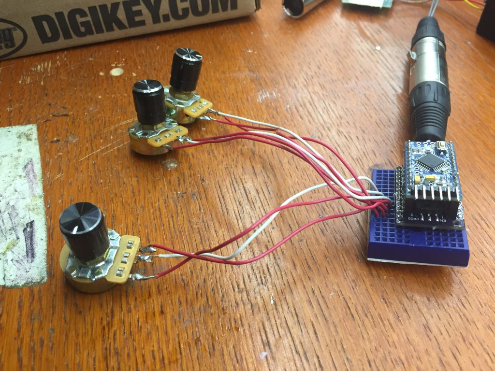

Arduino DMX ‘Light Board’, Mini Moving Light Hanging Hardware
Over the past week, I got to the point with the mini moving light that I needed some way to consistently pump DMX into my prototypes to test their functionality. Thankfully, the first set of PCBs I built for this project function as both DMX receivers and transmitters, so whipping together a basic DMX controller only took about 20 minutes.
So here it is: my tiny DMX controlled "light board":

Not much to look at, really. It's just the DMX Control Shield I build earlier, with its Arduino Pro Mini, and 3 potentiometers from the junk box. The ends of each pot are tied to +5V and ground, and the wipers are tied to three analog pins.
Originally, I had the Arduino just reading the straight value from the analog pins, mapping those 10-bit (0 to 1023) values from the ADC to 8 bit (0 to 255) values suitable for DMX, and shoving those out as DMX addresses 1,2, and 3 as fast as possible. But I found that some inconsistency in the analog readings caused the servos and LED to twitch and flicker noticeably. So I modified the code to read the values from the pots every 20 milliseconds and average the last 10 readings when outputting. The output values calmed right down.
The result is a reasonably stable controller, and plenty to test the mini moving-light with:
I also made some specific improvements to the physical design of the light, including:
- Lengthening the body to accommodate the Carclo optic and heatsink
- Adding vents to the body for heat-removal
- Including some new wire-routing holes in the base and widening others for improved cable routing.
I also designed and printed some (really adorable) 1" triangle truss and some hanging brackets to mount this thing on. Here's the moment from my Sunday night livestream where I hung the light on its truss for the first time:
Just today, I got in another couple orders from DigiKey, and my latest batch of PCBs from JLCPCB should arrive tomorrow. The notable improvements to the PCB and parts include:
- Separating the Pan and Tilt servo pads (doh!)
- Switching to a stout-er 5V regulator
- I also ordered a few VX7805-1000's to play with. They're a self-contained, fixed-output buck converter that's meant to be a drop-in replacement for a 7805 linear regulator. Neat part if it works, and not horribly expensive.
- Switching to an inductor spec'd for 1A forward current instead of 500mA.
- Switching to a schottky diode rated for 30V instead of 20V.
Assuming this assembly goes well, I hope to build two or three of this version (which I'm calling version 0.4) and set them up for a little DMX-controlled dance party. Here's hoping!